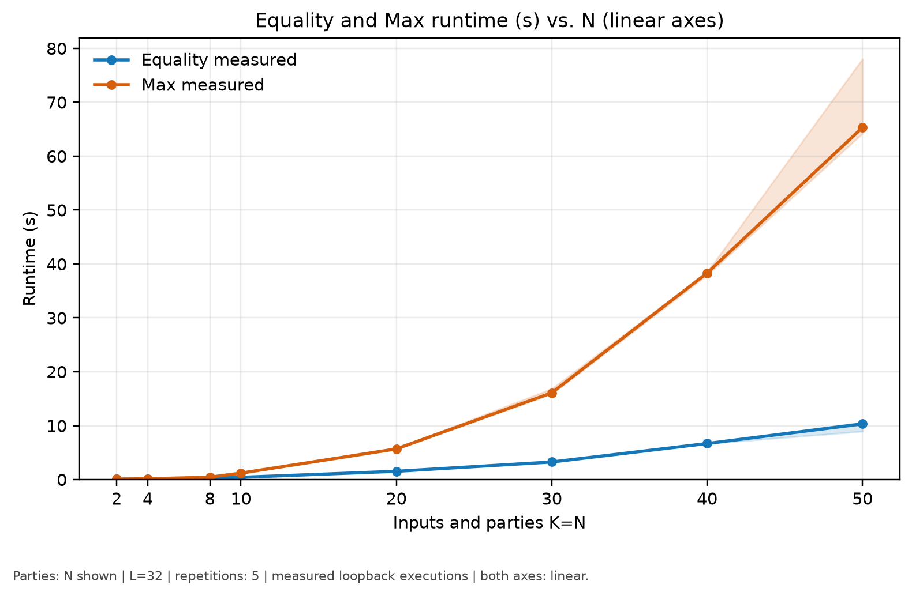
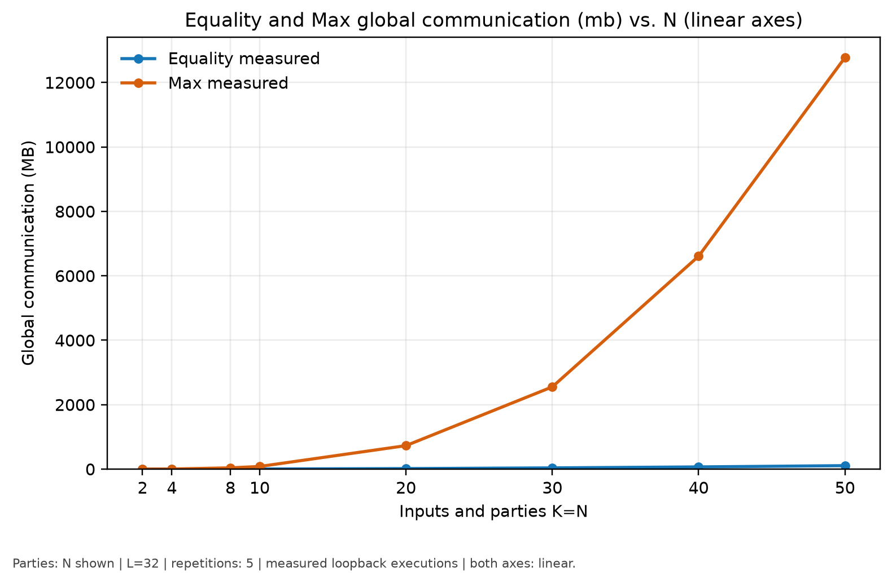
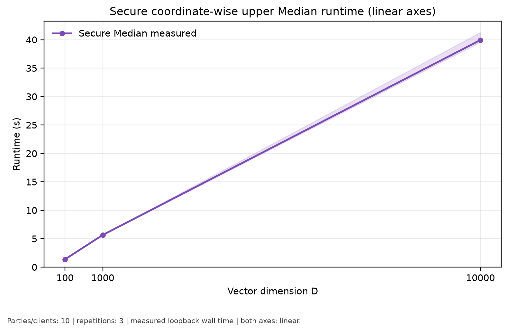
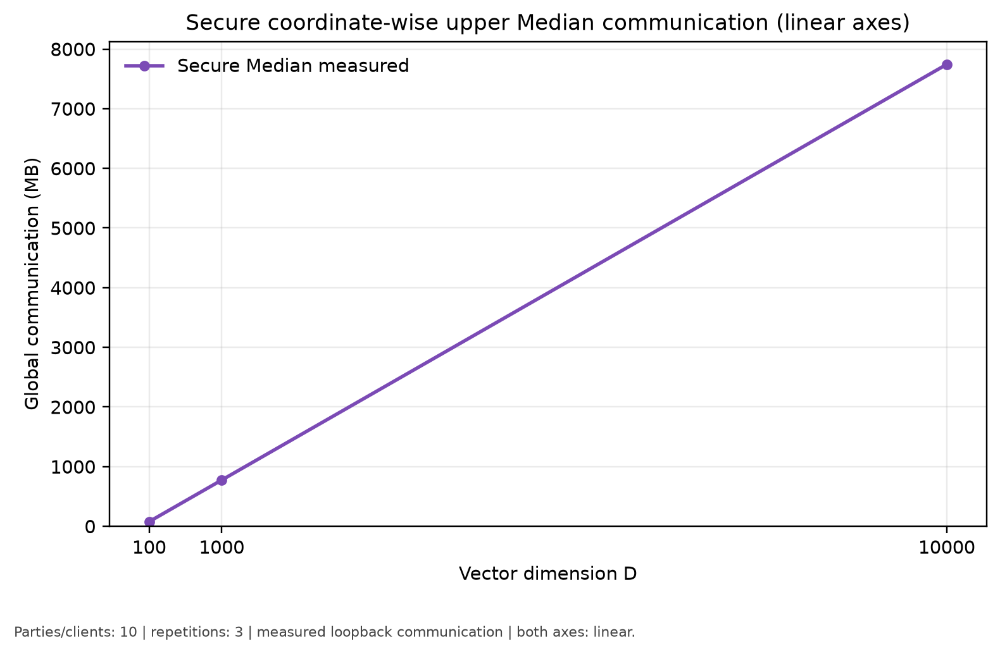
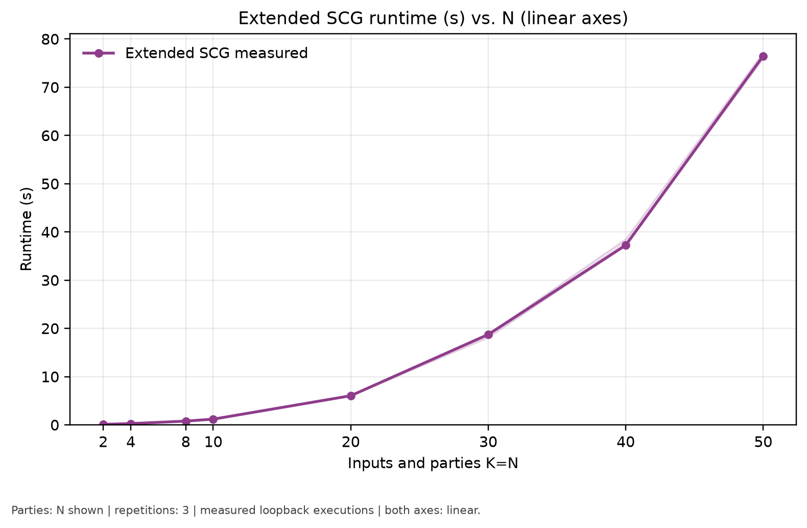
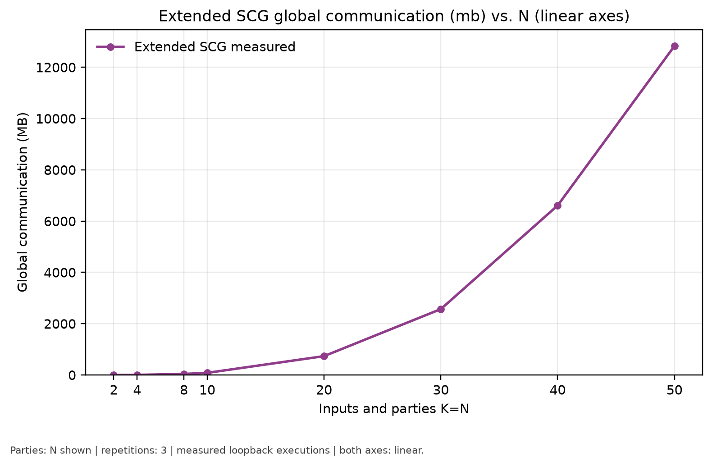
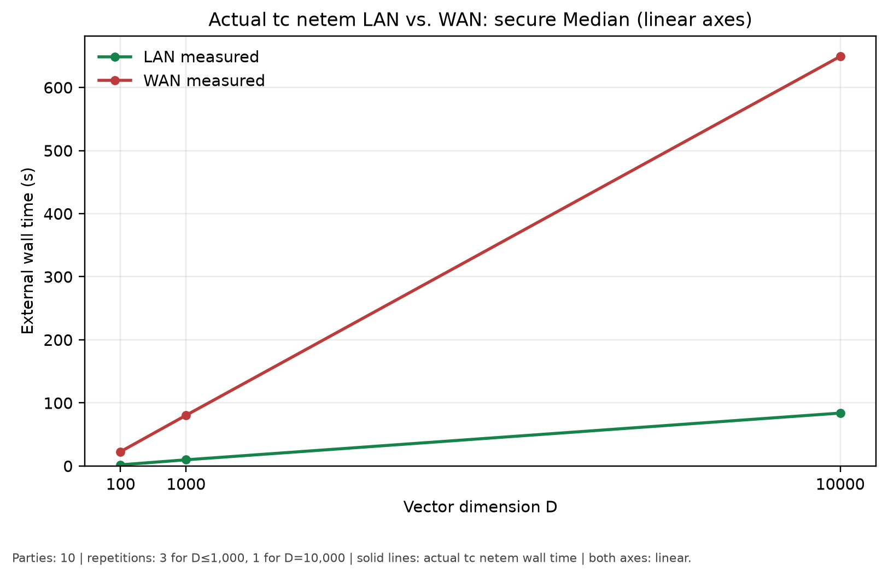
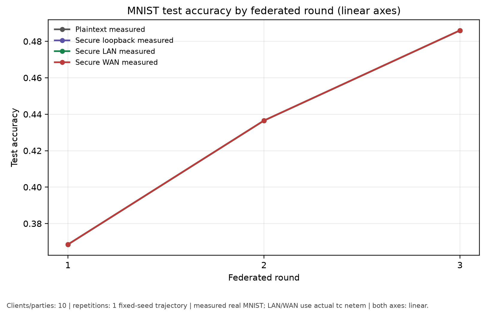
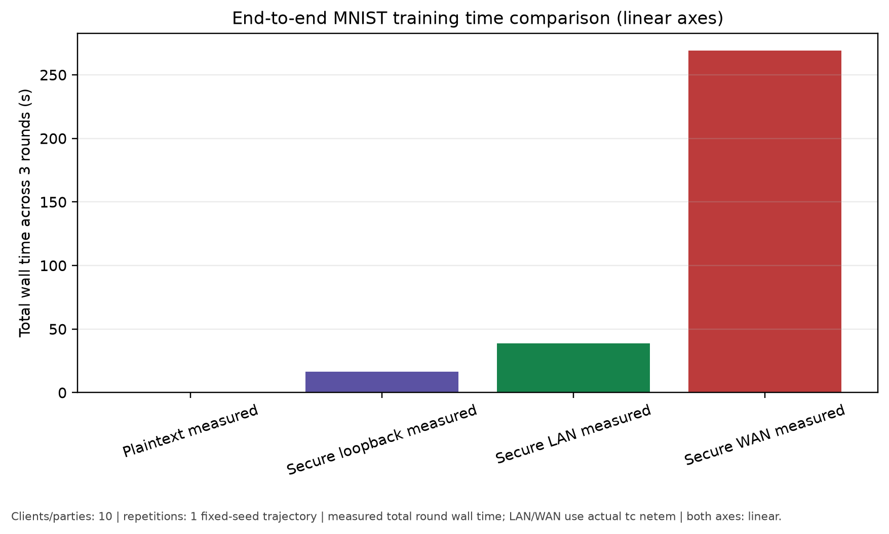

نمایش تماماندازه ↗زمان اجرا نسبت به N
اثر افزایش همزمان تعداد partyها و، در Max، تعداد ورودیها بر زمان اجرای امن.
دریافت PDFمجموعهٔ نتایج بازتولیدشده
نتایج اجرای Equality، Max، Median، Extended SCG و تجمیع امن در Federated MNIST؛ ارائهشده با محورهای خطی برای مقایسهٔ مستقیم و خوانا.
PAPER FIGURES · LINEAR AXES
روی هر نمودار کلیک کنید تا تصویر اصلی باز شود. نسخهٔ PDF همهٔ شکلها نیز برای استفاده در گزارش، مقاله و اسلاید ارائه در دسترس است.

نمایش تماماندازه ↗اثر افزایش همزمان تعداد partyها و، در Max، تعداد ورودیها بر زمان اجرای امن.
دریافت PDF
نمایش تماماندازه ↗
نمایش تماماندازه ↗زمان اجرای Median مختصاتمحور برای بردارهای ۱۰۰ تا ۱۰٬۰۰۰ بعدی.
دریافت PDF
نمایش تماماندازه ↗رشد تقریباً خطی ارتباط با افزایش تعداد مختصات بردارهای خصوصی.
دریافت PDF
نمایش تماماندازه ↗
نمایش تماماندازه ↗
نمایش تماماندازه ↗مقایسهٔ اجرای مستقیم تحت پروفایلهای واقعی tc netem برای LAN و WAN.
دریافت PDF
نمایش تماماندازه ↗
نمایش تماماندازه ↗